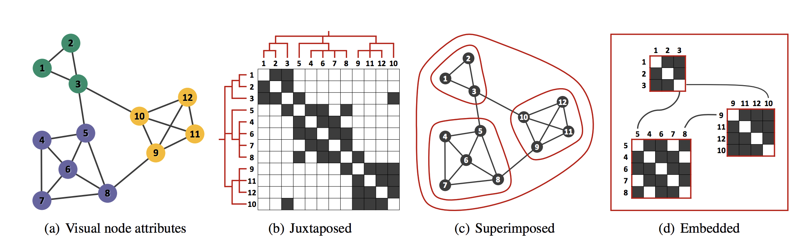

Network visualization
- What are the major representations of networks
- Advantages and disadvantages of each representions?
Glyphs-based Adjacency Matrix
Hybrid Adjacency Matrix

Corinna Vehlow, Fabian Beck, and Daniel Weiskopf. The State of the Art in Visualizing Group Structures in Graphs. EuroVis 2015
Hybrid Adjacency Matrix
Nathalie Henry, Jean-Daniel Fekete, and Michael J. McGuffin. NodeTrix: A Hybrid Visualization of Social Networks. InfoVis 2007
ZAME: Large-Scale Graph Visualization
Niklas Elmqvist, Thanh-Nghi Do, Howard Goodell, and Nathalie Henry. . PacificVis 2008